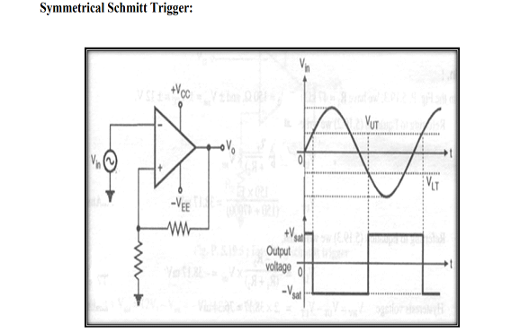

Theory

Inverting Schmitt Trigger:
The Inverting Schmitt trigger circuit is as Shown in Fig 1. The resistance divider formed by and connected between the output and the non-inverting terminal of Op Amp introduces positive feedback. This Schmitt trigger is basically an inverting comparator with positive or regenerative feedback introduced. Therefore, it is also called as Regenerative comparator. In Schmitt trigger the reference voltage is which is voltage developed across . This voltage is not fixed but its amplitude and sign is dependent on the output voltage, because,
 Integrator errors due to finite open-loop gain, finite input impedance and finite bandwidth.
The ideal performance equation for an integrator was obtained from the assumption that the op-amp used in the circuit had infinite open-loop gain and bandwidth. In all op-amp circuits using negative feedback, the extent to which a practical circuit performance departs from the ideal is governed by the loop gain . The larger the loop gain the closer the practical circuit conforms to the ideal. In a practical integrator, finite open-loop gain causes integrator performance errors for very low frequency input signals, and finite bandwidth causes errors for high frequency input signals. Integrator errors due to inadequate loop gain are discussed in terms of the circuit and Bode plots shown. The op-amp used in the circuit is assumed to have a finite differential input resistance , finite open-loop gain and a first order frequency response described by the relationship:
Integrator errors due to finite open-loop gain, finite input impedance and finite bandwidth.
The ideal performance equation for an integrator was obtained from the assumption that the op-amp used in the circuit had infinite open-loop gain and bandwidth. In all op-amp circuits using negative feedback, the extent to which a practical circuit performance departs from the ideal is governed by the loop gain . The larger the loop gain the closer the practical circuit conforms to the ideal. In a practical integrator, finite open-loop gain causes integrator performance errors for very low frequency input signals, and finite bandwidth causes errors for high frequency input signals. Integrator errors due to inadequate loop gain are discussed in terms of the circuit and Bode plots shown. The op-amp used in the circuit is assumed to have a finite differential input resistance , finite open-loop gain and a first order frequency response described by the relationship:
 The closed-loop performance equation for the circuit expressed in the form:
actual performance equation =ideal performance equation * gain error factor
The closed-loop performance equation for the circuit expressed in the form:
actual performance equation =ideal performance equation * gain error factor
 The above formula gives frequency response in terms of input and output voltage where
f1=amplifiers unity gain frequency.
f=the frequency t which gain is to be calculated.
The above formula gives frequency response in terms of input and output voltage where
f1=amplifiers unity gain frequency.
f=the frequency t which gain is to be calculated.